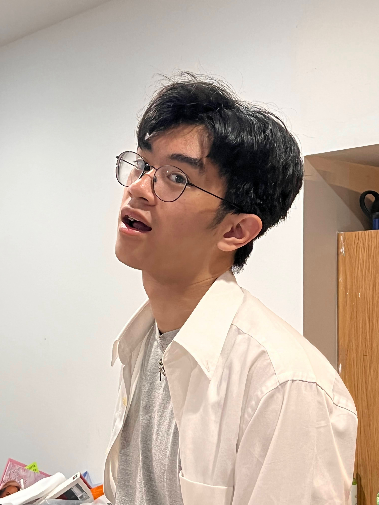

Hey! My Mentor is Roland Escudero (Grad of 2022')
During his time at STMC, Roland was a part of many musical endeavours including Jazz Band and Jazz Choral. He performed in many gigs either playing on the drum kit or partaking in singing but ultimately shared his talents and helped others improve regardless of the situation. As I came to STM, I was inspired by his natural talents and we became friends through the music program. Now, he regularly teaches me music theory and how to play on the Drum Kit, as well as some music production and singing.